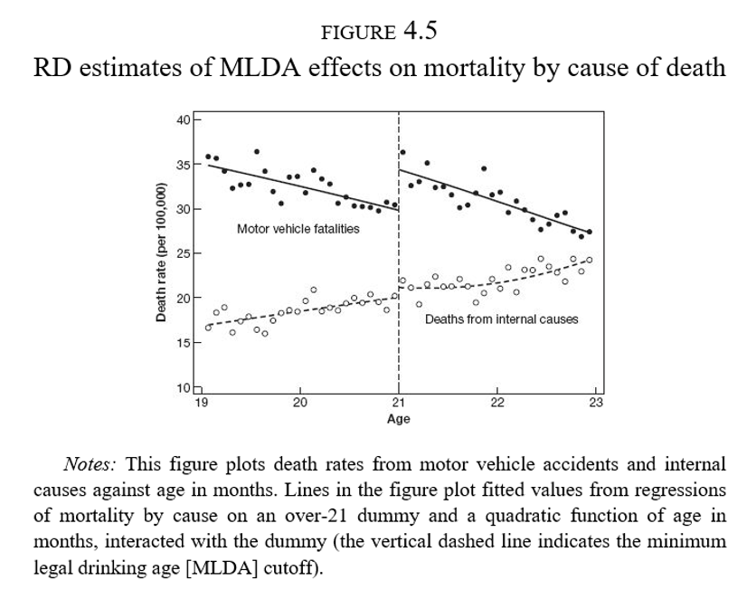
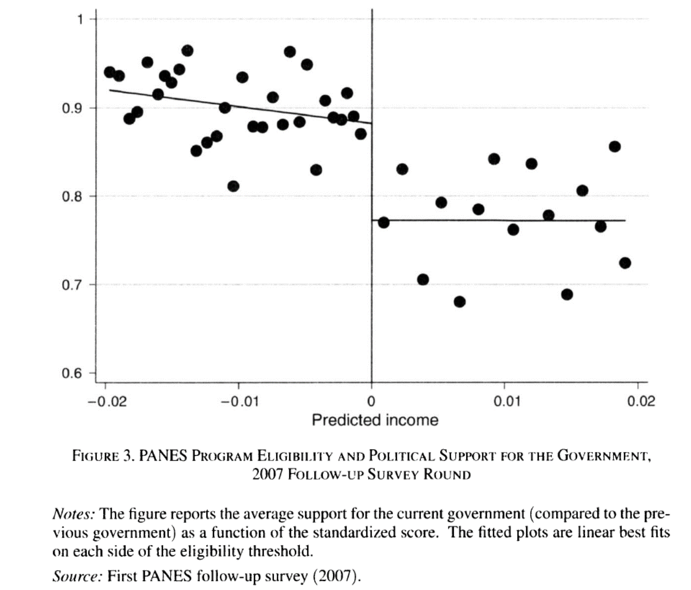

Diseños con discontinuidades
Inferencia Causal
Irvin Rojas
https://rojasirvin.github.io/
Centro de Investigación y Docencia Económicas
División de Economía
Diseños con discontinuidades
Ejemplo: edad legal para tomar en EU
En Estados Unidos la edad legal para tomar es de 21 años
¿Por qué tenemos una ley para prohibir el consumo de alcohol antes de los 21 (o 18) años?
La ley genera una discontinuidad en el acceso a alcohol justo a los 21 años
Podemos evaluar la efectividad de la política
¿Qué pasa en el cumpleaños 21?
¿Efecto fiesta?
Hay una tendendencia a la baja a ambos lados de la discotinuidad
Sin embargo, hay un claro salto en el número de muertes a los 21 años
Discontinuidades nítidas
Discontinuidades nítidas
- \(D_a\) es el estado del tratamiento
\[ D_a = \begin{cases} 1 & \text{si } a \geq 21 \\ 0 & \text{si } a < 21 \end{cases} \]
\(a\) es conocida como running variable, score, variable de selección, variable de asignación, etc.
El tratamiento es una función determinística de \(a\)
- Si conocemos \(a\) entonces conocemos \(D_a\)
El tratamiento es discontinuo sobre \(a\)
- No importa qué tanto nos acercamos al corte, el estatus de tratamiento es el mismo hasta \(a\)
Discontinuidades nítidas y regresión
Muchas cosas cambian con la edad
Riesgo de enfermedades, muerte por otras causas
Usamos regresión para aislar los efectos de la regla
\[ \bar{M}_a=\alpha+\rho D_a + \gamma a + \epsilon_a \]
\(\bar{M}_a\) es la tasa de mortalidad en el mes \(a\)
\(\rho\) captura el salto en la mortalidad a los 21 años
\(\hat{\rho}=7.66\) : número de muertes adicionales a los 21 años
Diferencia con otros diseños
A diferencia de los métodos de regresión o pareamiento donde controlamos por un vector \(X\) y esperamos que el tratamiento sea aleatorio controlando por \(X\)
Aquí no hay valores de \(a\) para los que observemos individuos en ambos estados del tratamiento
La interpretación de la RD es en la vecindad de la discontinuidad
No linealidad vs discontinuidad
Estimar el modelo de RD cuando la relación entre \(E[Y|X]\) es como en el tercer panel nos llevaría a inferir un salto donde no existe
Al usar RD debemos asegurarnos que estamos identificando una discontinuidad
Modelar la no linealidad (enfoque antiguo)
Concentrarnos solo en una ventana cercana a \(a_0\) (enfoque más moderno)
No linealidades
Podemos usar polinomios de \(a\)
Idealmente, las conclusiones no deberían cambiar de acuerdo al grado del polinomio usado
El consejo es intentar varias especificaciones y no solo la que se ajuste más a nuestras expectativas de los resultados
La Figura 4.2 parece tener una leve curvatura a la derecha de \(a\)
Podemos ajustar directamente un polinomio de la edad:
\[ \bar{M}_a=\alpha+\rho D_a + \gamma_1 a + \gamma_2 a^2 + \epsilon_a \]
No linealidades
- O podemos espcificar un coeficiente diferente para \(a\) antes y después de \(a_0\):
\[ \bar{M}_a=\alpha+\rho D_a + \gamma(a-a_0) + \delta[(a-a_0)D_a] + \epsilon_a \]
- Notemos que en este caso el efecto del tratamiento es:
\[ \rho+\delta(a-a_0) \]
Es decir, un efecto que depende de la distancia con \(a_0\)
Sin embargo, ¿qué tan válido es evaluar el efecto en, digamos, \(a=30\)? ¿O en \(a=10\)?
No linealidades
- Podemos emplear una combinación de no linealidades y cambios en pendiente:
\[ \begin{aligned} \bar{M}_a&=\alpha+\rho D_a + \gamma_1(a-a_0) +\gamma_2(a-a_0)^2+\delta_1[(a-a_0)D_a]+ \delta_2[(a-a_0)^2D_a] + \epsilon_a \end{aligned} \]
En esta especificación los términos lineal y cuadrático cambian en \(a_0\)
Y el efecto del tratamiento en este caso es:
Notemos que en este caso el efecto del tratamiento es:
\[ \rho+\delta_1(a-a_0)+\delta_2(a-a_0)^2 \]
- En los dos casos anteriores, regularmente se interpreta solo a \(\rho\) como el efecto del tratamiento
No linealidades
\(\hat{\rho}=9.55\)
Modelo más elaborado con mejor ajuste
Es evidente gráficamente que hay un salto a los 21 años y una caída suave después
¿Qué tan robustos son los resultados?
Efectos estimados
Efectos estimados
Discontinuidades nítidas: resumen
- RD nítida se usa cuando el tratamiento es una función determinística de una variable \(x\)
\[ D_i = \begin{cases} 1 & \mbox{if } x_i \geq x_0 \\ 0 & \mbox{if } x_i < x_0 \end{cases} \]
\(x_0\) es el umbral o corte
\(D_i\) es una función determinística de \(x_i\) pues una vez que conocemos \(x_i\) entonces conocemos \(D_i\)
\(D_i\) es una función discontinua en \(x_i\) pues no importa que tanto nos acerquemos por la izquierda o por la derecha a \(x_0\), el estado del tratamiento no cambia
Discontinuidades nítidas: resumen
A diferencia de los modelos de regresión o de pareamiento, no hay valor de \(x_i\) en el que observemos a individuos tratados y no tratados
La interpretación del efecto estimado por RD es un efecto local en la vecindad de \(x_0\), donde podemos tener confianza que los individuos tratados y no tratados son similares en todas las dimensiones excepto en su posición respecto a \(x_0\)
Una especificación flexible permite no confundir una discontinuidad con una no linealidad
En la práctica, el polinomio de \(x_i\) puede ser tan complejo como se desee pero se espera que los resultados no sean muy sensibles a especificaciones de este
El método no paramétrico consiste en la estimación de \(\rho\) en vecindades cada vez más pequeñas alrededor de \(x_0\)
Discontinuidades difusas
La ilusión de la élite
Escuelas de élite, exam schools, altamente competitivas en Nueva York y Boston
Bajas tasas de admisión
¿Cómo diferenciar el valor agregado de la escuela del hecho de que la acta selectividad hace que a estas escuelas asistan solo los alumnos más brillantes?
¡Ojalá pudiéramos asignar alumnos al azar!
Los estudiantes en estas escuelas de élite comparten clases con estudiantes aventajados
La regla de asignación
Cada escuela tiene un corte de puntaje de admisión
En la escuela más competitiva de Boston aquellos estudiantes debajo del corte nunca asisten a dicha escuela
Los que están arriba del corte casi siempre acaban en la BLS

La regla de asignación
- Sin embargo, aquellos que no alcanzan el puntaje mínimo de la BLS acaban de cualquier forma en una escuela de élite

La regla de asignación
Hay una dimensión que genera una discontinuidad: efectos de pares o peer effects
Es una de las preocupaciones más importantes de política educativa en casi cualquier país
Tener buenos (malos) compañeros afecta los resultados del individuo \(i\)
Quienes ingresan a la BLS (séptimo grado) tuvieron compañeros con mejor desempeño en matemáticas cuando iban en cuarto grado

Modelo de efectos de pares
- Un modelo de efectos de pares:
\[Y_i=\theta_0+\theta_1\bar{X}_{(i)}+\theta_2 X_i + u_i\]
\(Y_i\) es el resultado de un examen de matemáticas en el séptimo año del individuo \(i\)
\(X_i\) es el resultado de un examen de matemáticas en el cuarto año del individuo \(i\)
\(\bar{X}_{(i)}\) es el resultado promedio de un examen de matemáticas en el cuarto año de los compañeros de \(i\) sin incluir \(i\)
Otra notación en la literatura escribe esto como \(\bar{X}_{(-i)}\)
Los resultados están estandarizados por lo que los coeficientes se interpretan en términos de desviaciones estándar: \(\hat{\theta}_1=0.25\sigma\)
RD difuso + VI
Problemas
Sabemos que en la discontinuidad, la calidad de los pares cambia drásticamente
Características de los hogares (habilidad de los padres)
Doble causalidad: \(i\) afecta a \(j\) pero \(j\) afecta a \(i\) a la vez
Variables instrumentales:
Queremos conocer el efecto de la calidad de los pares en el desempeño de matemáticas
Usamos el corte mínimo para ser aceptado en BLS como instrumento de la calidad de los pares
Forma reducida
- Si solo usamos el corte para ser aceptado en BLS:
\[Y_i=\alpha_0+\rho D_i + \beta_0 R_i + \epsilon_i\]
Se obtiene \(\hat{\rho}=-0.02\), \(s.e.=0.10\)
Este es un modelo de forma reducida (variable de interés en función de la posición respecto al corte)
Es el efecto causal de estar antes o después del corte

Modelo de VI
- Modelo estructural:
\[Y_i=\alpha_2+\lambda \bar{X}_{(i)} + \beta_2 R_i + \epsilon_{2i}\]
- Con una primera etapa
\[\bar{X}_{(i)}=\alpha_1 + \phi D_i + \beta_1 R_i + \epsilon_{1i}\]
En la primera etapa \(\hat{\phi}=0.80\sigma\), como lo habíamos visto ya en la Figura 4.8
En la segunda etapa \(\hat{\lambda}=-0.023\), \((s.e.=0.13)\)
Modelo de VI
La ilusión
No hay tal ganancia por compartir clase con alumnos brillantes
La gente sigue percibiendo que sus hijos ganan al ir a escuelas de élite
Posiblemente los egresados de estas escuelas tengan mayores ingresos
Las ganancias que se puedan obtener no son vía el efecto de pares o un mejor rendimiento cognitivo
RD difusa: resumen
RD difusa explota discontinuidades en la probabilidad o valor esperado del tratamiento condicional en una variable
El resultado es que la discontinuidad se convierte en una VI para el estado del tratamiento en vez de una variable que se prende y apaga
\[ P(D_i =1|x_i)= \begin{cases} g_1(x_i) & \mbox{if } x_i \geq x_0 \\ g_0(x_i) & \mbox{if } x_i < x_0 \end{cases} \]
Las funciones \(g_0\) u \(g_1\) difieren en \(x_0\)
Supongamos que \(g_1(x_0)>g_0(x_0)\), es decir, \(x_i\geq x_0\) hace el tratamiento más probable
RD difusa: resumen
- La relación entre el estado de tratamiento y \(x_i\) puede ser escrita como:
\[E(D_i|x_i)=P(D_i=1|x_i)=g_0(x_i)+[g_1(x_i)-g_0(x_i)]T_i\]
con \(T_i=\mathcal{I}(x_i\geq x_0)\)
- Escribiendo las funciones \(g_0\) y \(g_1\) como polinomios flexibles de \(x_i\)
\[E(D_i|x_i)=\gamma_{00}+\gamma_{01}x_i+\gamma_{02}x_i+\ldots+\gamma_{0p}x_i^p +\pi T_i + \gamma_{1}^{*}x_i T_i+ \gamma_{2}^{*}x_i^2 T_i+\ldots+ \gamma_{p}^{*}x_i^p T_i\]
RD difusa: resumen
En la primera etapa podríamos usar \(\{x_iTi, x_i^2 T_i,...,x_i^p T_i\}\) como instrumentos para \(D_i\)
Una primera etapa con interacciones sugeriría emplear una segunda etapa también con interacciones
La versión más simple solo usa \(T_i\) como instrumento
La primera etapa será
\[D_i=\gamma_0+\gamma_1 x_i + \gamma_2 x_i^2 + \ldots + \gamma_p x_i^p + \rho T_i + \xi_{i}\]
- La forma reducida o ITT de este modelo es:
\[y_i=\beta_0+\beta_1 x_i + \beta_2 x_i^2 + \ldots + \beta_p x_i^p + \delta\ T_i + u_{i}\] - Mientras que la ecuación estructural
\[y_i=\pi_0+\pi_1 x_i + \pi_2 x_i^2 + \ldots + \pi_p x_i^p + \lambda\ D_i + u_{i}\] se estima por MC2E usando \(T_i\) como instrumento de \(D_i\)
Ejemplo: Transferencias gubernamentales y apoyo político
Transferencias gubernamentales y apoyo político
Manacorda, M., E. Miguel y A. Vigorito (2011), Government Transfers and Political Support
¿Los programas gubernamentales generan lealtades?
Programa Nacional de Emergencia Social (PANES) basado en un índice de pobreza
Existe una discontinudad en el acceso al programa
Contexto
¿Qué pasó en Uruguay?
Crisis económica a inicios de los 2000
En abril de 2005 el Frente Amplio toma el poder
Expansión del gasto público contra la pobreza (0.41% del PIB)
PANES
Ingreso ciudadano: US$70
Otros componentes: alimenticio, empleo, salud, etc.
Alcanzó al 10% de los hogares y 14% de la población
Regla de asignación
¿Cómo se decidió quién recibiría el PANES?
Focalizado a los más pobres
Modelo probit de ingreso ajustado
El ingreso observado puede ser un indicador muy ruidoso
Se asignó el programa solo a aquellos por debajo de un umbral de ingreso ajustado
Datos
Se recolectó información de los hogares alrededor de la discontinuidad (tratados y no tratados)
Se realizaron dos rondas de seguimiento en 2006-07 y en 2008
Variable de interés: apoyo político al gobierno en turno
¿Cómo medir el apoyo político?
Construcción de un índice del 0 al 1
Los hogares que reciben PANES tenían un apoyo político cercano a 0.90
Los no elegibles mostraban un apoyo de 0.77
Esto implica un incremento de 13 puntos porcentuales
Evidencia gráfica
Resultados de regresión
\(E\) es el umbral de elegibilidad de PANES
\(N_i=S_i-E\) es el score normalizado
\[ y_i=\beta_0+\beta_1 \mathcal{I}(N_i<0) + f_1(N_i) + \mathcal{I}f_2(N_i)+u_i \]
- \(\beta_1\) captura el impacto del programa
Efectos estimados
Evidencia gráfica en 2008
Robustez
Estimación
Discontinuidades nítidas
- Motivamos el uso de una regresión con el siguiente modelo
\[ D_i = \begin{cases} 1 & \mbox{si } x_i \geq c_0 \\ 0 & \mbox{si } x_i < c_0 \end{cases} \]
- Si asumimos efectos de tratamiento constantes
\[ y_i^0=\alpha + \beta x_i \\ y_i^1= y_i^0 + \delta \]
Discontinuidades nítidas
- Con nuestro modelo de resultados contrafactuales
\[ \begin{align} y_i &= y_i^0 + (y_i^1 - y_i^0)D_i \\ y_i &= \alpha + \beta x_i + (\alpha + \beta x_i + \delta - \alpha - \beta x_i)D_i \\ y_i &= \alpha + \beta x_i + \delta D_i + \varepsilon_i \end{align} \]
- Formalmente, el efecto del tratamiento es
\[ \delta = \lim_{x_i\to c_o} E(y_i^1|x_i = c_0) - \lim_{x_i\leftarrow c_o} E(y_i^0|x_i = c_0) \] - Pero como solo usamos la información en la vecindad del corte de elegibilidad, podemos definir el efecto como
\[ \delta^{RD,N} = E(y_i^1 - y_i^0 | x_i=c_0) \]
Discontinuidades nítidas
El efecto estimado es un efecto local en sentido de que nuestras conclusiones son válidas solo en la vecindad alrededor de \(c_0\)
A diferencia de otros diseños, aquí no hay traslape
Recurrimos a la extrapolación
Supuesto de identificación
Continuidad
\(E(y_i^0)\) y \(E(y_i^1)\) son funciones suaves y continuas de \(x_i\) en el corte \(c_0\)
En ausencia del tratamiento, los resultados potenciales no saltan
Esto implica que no debe haber otras interacciones o variables imitidas que salten en \(c_0\)
En el ejemplo del acceso a alcohol, debemos descartar que no hay otros factores (como enfermedades) que se disparen a los 21 años
Estimación
Se acostumbra construir la versión centrada de la variable de asignación: \(x_i-c_0\)
Para permitir no linealidades en \(x_i\), podríamos pensar que podemos especificar polinomios de alto grado
Esta es una mala idea, como lo muestran Andew & Imbens (20219), “Why Higher-Order Polynomial Shpuld Not Be Used in Regression Discontinuity Designs”
Estimación
- Cuando recentramos:
\[ \begin{align} y_i^*&=\alpha + \beta (x_i-c_0) + \delta D_i + \varepsilon_i \\ & = \alpha + \beta x_i - \beta c_0 + \delta D_i + \varepsilon_i \\ & = \alpha^* + \beta x_i + \delta D_i + \varepsilon_i \end{align} \] con \(\alpha^*=\alpha-\beta c_0\)
- Es decir, solo se modifica la ordenada al origen en la regresión
Estimación
- Permitimos pendientes distintas antes y despues de \(c_0\)
\[ \begin{align} E(y_i^0|x_i)&=\alpha + \beta_{01} \tilde{x}_i \\ E(y_i^1|x_i)&=\alpha + \delta + \beta_{11} \tilde{x}_i \end{align} \]
- Usando la ecuación de resultados potenciales
\[ \begin{align} E(y_i|x_i)=\alpha + \beta_{01} \tilde{x}_i + (\alpha + \delta + \beta_{11} \tilde{x}_i-\alpha - \beta_{01} \tilde{x}_i) D_i \end{align} \]
- Dando lugar a la regresión
\[ y_i = \alpha + \beta_{01} \tilde{x}_i + \delta D_i + \beta_1^*\tilde{x}_i D_i+ \varepsilon_i \] donde \(\beta_1^*=\beta_{11}-\beta_{01}\)
Esto es, una regresión de \(y_i\) en \(D_i\), \(\tilde{x}_i\) y la interacción \(\tilde{x}_i D_i\)
Interpretamos \(\delta\) como el salto en la función o el efecto causal
Con un polinomio de segundo orden tendríamos
\[ y_i = \alpha + \beta_{01} \tilde{x}_i + \beta_{02} \tilde{x}_i + \delta D_i + \beta_1^*\tilde{x}_i D_i+ \beta_2^*\tilde{x}_i^2 D_i+ \varepsilon_i \]
Estimación no paramétrica
Muchos autores cuestionan la estimación paramétrica que hemos tratado hasta ahora pues el sesgo puede ser sustancial
En muchas aplicaciones se prefiere usar una regresión lineal no paramétrica
Es una regresión restringida a una ventana, con pesos para cada valor de \(E(y|x)\)
Consiste en estimar
\[\hat{a}, \hat{b} = \arg \min_{a,b}\sum_{i=1}^n(y_i-a-b(x_i-c_0))^2K\left(\frac{x_-c_0}{h}\right)1(x_i\geq 0)\]
Y lo mismo para \(x_i<c_0\)
El parámetro \(h\) indica el ancho de banda, escogido mediante técnicas de optimización
Consiste en estimar una regresión centrada en cada valor de \(x_i\) para obtener una predicción de \(E(y_i| X_i=x_i)\)
Estimación no paramétrica
Usamos observaciones a la izquierda y a la derecha de \(x_i\)
Se les otorga un peso de acuerdo con la función \(K(\cdot)\)
Son métodos computacionalmente intensivos
En la práctica, el paquete rdrobust elige el \(h\) óptimo, estima la regresión local (con un kernel triangular por default) y un polinomio del orden especificado

Discontinuidades difusas
- Tenemos un diseño difuso cuando hay un salto en la probabilidad de ser asignado al tratamiento
\[ \begin{align} \lim_{x_i\rightarrow c_0} P(D_i=1|x_i=c_0) \neq \lim_{c_0 \leftarrow x_i} P(D_i=1|x_i=c_0) \\ \end{align} \]
La probabilidad de recibir el tratamiento es discontinua en \(c_0\)
El supuesto de identificación es igual que en el caso nítido, que los resultados potenciales son funciones continuas y suaves en \(c_0\)
Recurrimos a variables instrumentales
Ser asignado al tratamiento se vuelve un instrumento para recibir el tratamiento
\[ P(D_i=1|x_i) = \begin{cases} g_1(x_i) & \mbox{si } x_i \geq c_0 \\ g_0(x_i) & \mbox{si } x_i < c_0 \end{cases} \]
Discontinuidades difusas
- Tenemos entonces una primera etapa
\[ D_i = \gamma_0 + \gamma_1 x_i + \gamma_2 x_i^2 + \rho T_i + \varepsilon_i \]
donde
\[ T_i = \begin{cases} 1 & \mbox{si } x_i \geq c_0 \\ 0 & \mbox{si } x_i < c_0 \end{cases} \]
Discontinuidades difusas
- La forma reducida es
\[ y_i = \beta_0 + \beta_1 x_i + \beta_2 x_i^2 + \delta T_i + u_i \]
- Y la ecuación estructural es
\[ y_i = \pi_0 + \pi_1 x_i + \pi_2 x_i^2 + \lambda D_i + \nu_i \] - En términos de código, hacemos lo mismo que en los diseños nítidos
Últimos consejos
Hacer estudios placebo cuando sea posible: probar la especificación principal en variables que no deberían verse afectadas por el tratamiento
Mostrar que no haya discontinuidades alrededor del corte
Verificar que otras covariables sean continuas alrededor del corte